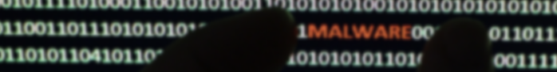

Malware
Malware is the greatest and most common threat for technology. It is contained of codes which are then developed by cyberattacks or social engineer as we call them, also to design such a dangerous malware in order to steal information about individuals without them knowing their information are being sold online through dark webs and other sources.
Anti-Malware
There are quite famous names on the anti-malware programs that can prevent and stop a malware from further infecting a pc, examples of these anti malware programs are Norton, Avast, Malwarebytes. Those are three best anti-malware software/programs from my experience that had ben preventing and it keeps my pc safe and healthy. Of course these topic wouldn’t be around if it didn’t have any types of attacks all over the internet. First here are the examples of the types of viruses which a user can encounter when visiting sites, downloading pirated copies of games,movies, and etc.
Types of Network Attacks
Boot sector, Firmware viruses, Macro virus, Program viruses and lastly script viruses, for the types of trojan horses there are several kinds of it such as remote-access, data-sending, destructive, proxy, ftp, security software disabler, denial of service (DoS) and last keylogger. All of these, they have the power to change any configuration of a pc’s files, documents, settings, and even get enough information to use credit and debit cards and also hack into social media accounts easily.
There is also adware, which can display unsolicited advertising using a pop-up web browser, randomware it denies the user from gaining access, rootkits are the most difficult to detect since it can easily gain administrative access to the victim’s personal computer. Spyware used for gathering enough data and sending it back to other cybercriminals. Worms is the most irritating by far since it is replicating other programs and it penetrates into the pc easily. Network attacks are relevant still to this day and it is used generally by cybercriminals. Examples of network attacks are Denial of services, distributed DoS, DNS poisoning, Man-in-the-Middle.
Remedies for an Infected System
Preventing malware is easy, updating your os regularly, having an antivirus software that can easily prevent, block any possible malwares that are getting detected overtime. Also browsing in the internet can be easy, but we must be cautious in what we’re searching for because sometimes, there are other links that are “too good to be true” and they can get your information without you even knowing. Avoiding torrent files, such as games movies, other software that can be downloaded thru pirated websites are indeed dangerous for they can easily penetrate the pc’s administrative access.
Social Engineering
Social engineers use some techniques and those techniques are, baiting, impersonation, tailgating, shoulder surfing, and last dumpster diving. To protect yourself from social engineering attacks you must first never give your username, password and other credentials, never click any unknown and fishy emails that are being sent to your emails, never ever use same passwords cause it can be the most easy way to gain access to an account, never post any work related information on social medias, and lastly report suspicious persons.
Securing Devices and Data
Protection of Hardware (PC Units, Servers, Network Adapters, etc.) and Software (Data) is a must priority when storing them inside a facility, office, etc. This includes data, employees, certificates, records, and such stored inside company computers, network adapters, and cloud servers are significant assets of an organization/institution. Additionally, Applying several layers of security can prevent further harm like data loss, theft, alteration, malware injection, network exploitation, and others.
- Layers of security include encryption of files, data backup, device & remote access policy configurations, network maintenance, password policies, identification and authentication policies, acceptable use policies, etc.
Device Privacy
A set of security goals that guarantee the safety of a network, data, and information computers used by a company. These policies are established by a committee made up of management and IT personnel. The IT team is typically responsible for implementing security policy requirements in the network.
Physical Security
Like data security, physical security ensures protection for every unit and piece of hardware inside the facility to prevent theft and unauthorized access. This assures the company’s files, data assets, and documents are kept in a safe place.
Types of Secure Locks

- Conventional lock - Opened by inserting the necessary key into the door handle mechanism.
- Deadbolt lock - Opened by inserting the necessary key into the lock of the door handle mechanism.
- Electronic lock - Opened by entering a PIN or secret combination code into the keypad unlocks the device.
- Token-based lock - Unlocked by utilizing a proximity reader to find a smart card or wireless key fob, or by swiping a secure card.
- Biometric lock - Opened by using a biometric scanner, such as a thumbprint reader.
- Multifactor lock - a lock that combines the aforementioned mechanisms.
Mantraps
 Image Source
Image Source
For areas that require a high level of security, they are employed as physical safety solutions. They can frequently be found at data centers, hospitals, research institutes, post offices, airlines, and banks. They are used to control surroundings to keep unauthorized individuals out and prevent tailgating personnel of interest.
How does it work?Mantraps operate utilizing a mechanism of interdependent locking and unlocking that only allows entry to the second door when the first door has been correctly locked. When the first door closes, the person stuck inside must wait until it does before providing the credentials—such as passcodes or biometric authentication—needed to get through the second door.
Data
Data is perhaps the most important resource for an institution. assets. Organizational information may include analysis. development, finance, sales, and human resource Customer and employee data
- Data can be destroyed or lost in situations like theft, an equipment malfunction, or a calamity.
- Data loss or leak are terms used to describe when data is stolen, exposed to the public, or lost.
- These can be prevented through data backups, and file and folder encryptions.
Data Backups
Making a backup copy of your digital data in case the original copies are lost, erased, or damaged is known as data backup. Data is recovered or restored using the backup copy for business continuity and disaster recovery.
Many IT companies create two backup copies, keeping one on-site for the quickest recovery time and another off-site or in the cloud in case their on-site copy is damaged, usually the result of a natural or man-made disaster.
- Data backups must be performed regularly as mentioned in security policies.
- These backups can be stored onsite or much better offsite like cloud services/ servers.
File Encryption
File encryption is a process of converting plaintext files into an unreadable format. This unreadable format is also known as cipher text. File encryption is done using a key, which is a string of bits that is used to encrypt or decrypt a file. The key is used to encrypt a file by applying an algorithm to the file, and the resulting ciphertext can only be decrypted and converted back to plaintext by someone who has the key.
Some Examples of file encryptions are:
- AES (Advance Encryption Standard) – Widely Used symmetric key encryption algorithm and is considered very secure. Used in variety of applications including disk encryptions and VPNs.
- RSA (Rivest-Shamir-Adleman) – Asymmetric key encryption algorithm that is often used for secure data transmission over the internet, such as in SSL/TLS.
- Blowfish – It is a symmetric key block cipher that is known for its speed and security.
- PGP (Pretty Good Privacy) – Another widely used encryption that encrypts files, emails, and entire hard drives. It uses both symmetric and asymmetric key encryption.
- VeraCrypt – A software that creates a virtual encrypted disk within a file or a partition.
- BitLocker – A disk encryption program that is built into the Windows operating system. It uses the AES encryption algorithm.
Data Wiping
Data Wiping is process of permanently destroying or erasing of files from the storage device, it can be from hard drive, USB drive, or memory card. This is often done to protect sensitive information before repurposing the device and can help prevent data breaches and protect user’s privacy. Note that Data wiping and reformatting are not the same. Reformatting a file does not necessarily delete a data and the data can still be recovered using special software. On the other hand, data wiping permanently erases all of the data from the storage device and is unrecoverable. Some common methods include using specialized software to overwrite the data, using hardware destruction methods such as shredding or degaussing, or physically destroying the device.
Windows SecurityIt is important to secure your computer and its workstations from theft. To prevent unauthorized users from stealing or accessing the computer, lock your workstations.
- Securing BIOS
- Short for Basic Input / Output System, is an important step in securing a computer or device. The BIOS starts before the Operating System (OS). There are three methods on how you can protect and secure your BIOS: Use of strong passwords, full disk encryption, and trusted platform modules.
- Setting up UEFI or BIOS is a process of configuring the firmware interface to control the computer's hardware and software settings. This may include adjusting the boot sequence, configuring hardware settings, and enabling or disabling security features such as a BIOS password or secure boot.
- Securing Windows Login
- Computer Login – a Local Login is a most common type of password protection. It is stored in the local computer and is not connected to the network.
- Biometric Login – Login using the user’s fingerprints, facial recognition, or iris scans.
- Biometric Login – Login using the user’s fingerprints, facial recognition, or iris scans.
- Single Sign-On (SSO): Single Sign-On (SSO) is a login method that allows users to access multiple systems and applications with a single set of credentials.
- Single Sign-On (SSO): Single Sign-On (SSO) is a login method that allows users to access multiple systems and applications with a single set of credentials.
- Remote login: A remote login is used to log into a computer from a remote location. This can be done using a remote desktop protocol (RDP) or virtual private network (VPN) connection
- Use a screen lock: Use a screen lock or automatic log-off when the computer is not in use to prevent unauthorized access.
- Be aware of phishing: Be aware of phishing attempts, which are a common way for attackers to steal passwords. Don't click on links or enter personal information into a website unless you are certain it is legitimate.
Web Security
Having a secured website helps protect user’s sensitive information such as personal data, financial information, and/or login credentials. A secure website can help to maintain the integrity of the website and its data. This includes preventing unauthorized changes to the website's content, as well as preventing attackers from using the website to spread malware or launch phishing attacks. User’s may try the following to secure their browser:
- Using of InPrivate mode or Incognito mode – it temporarily stores data and deletes them after the session ends.
- Clearing of browsing history – clears the stored history, cookies, files, etc.
- Pop-up blocker – A browser extension that blocks pop-up windows from appearing on a website.
- VPN (Virtual Private Network) – It encrypt data transmitted between the user and the VPN server and hides the user’s IP address.
- Smart screen filter – built into some web browser or OS. It protects users from malicious websites and downloads.
Updating OS
Updating an operating system (OS) is important for several reasons. First, updates often include security patches that fix vulnerabilities that could be exploited by hackers. These security patches are crucial for protecting your device and personal information. Second, updates can also include new features and improvements to the performance of the OS. Finally, updates often fix bugs and compatibility issues, which can improve the overall stability and usability of the device. In summary, regularly updating your OS helps to keep your device secure, improve its performance and fix any issues that may arise.
References:
Sanares, D. (2021). Module 2 - Security . Retrieved from https://dlsud.edu20.org/files/478612/Module2_Security.pdf?lmsauth=1c1b277b5a8fc1a9907a562b6bf671f1953abe5b
Mantrap in access control: Definition and use cases. Kisi. (n.d.). Retrieved January 20, 2023, from https://www.getkisi.com/guides/mantrap
What is data backup? Quest. (n.d.). Retrieved January 20, 2023, from https://www.quest.com/what-is-data-backup/